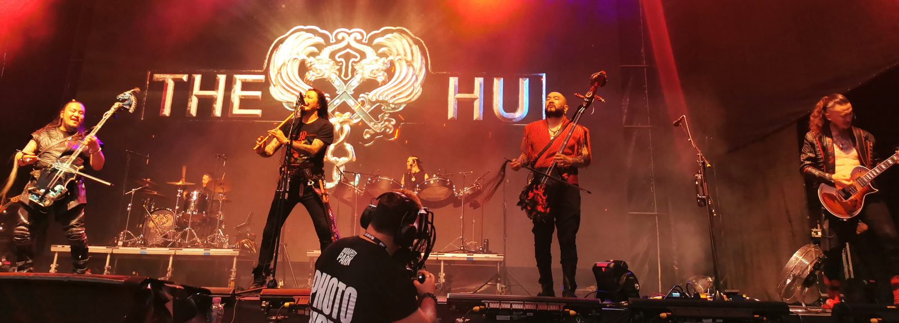
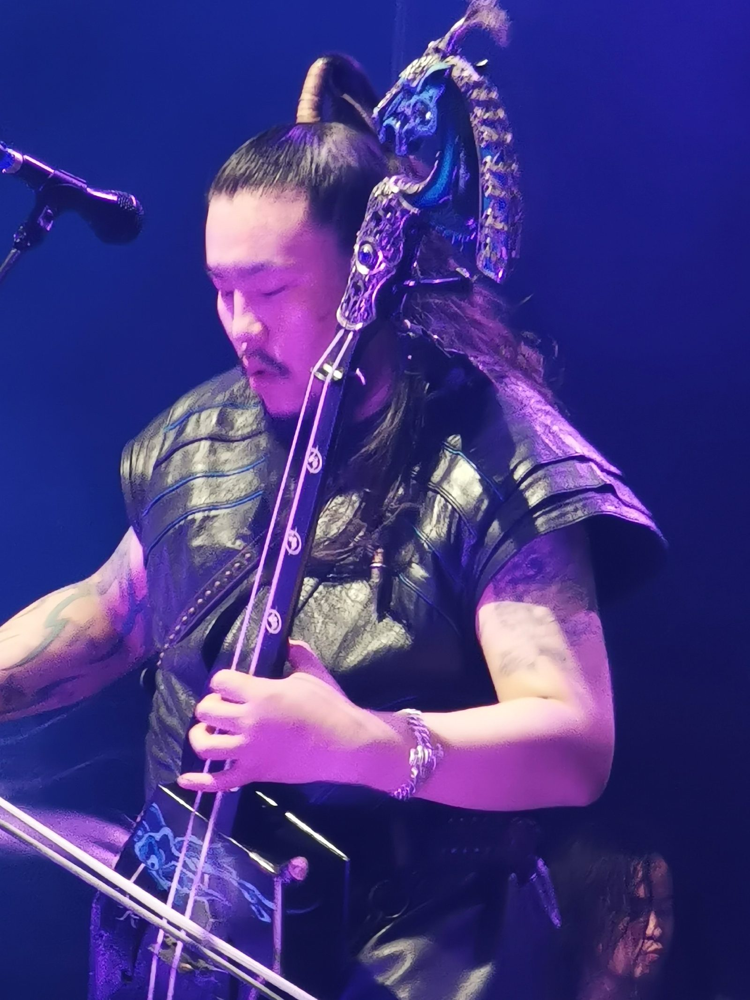
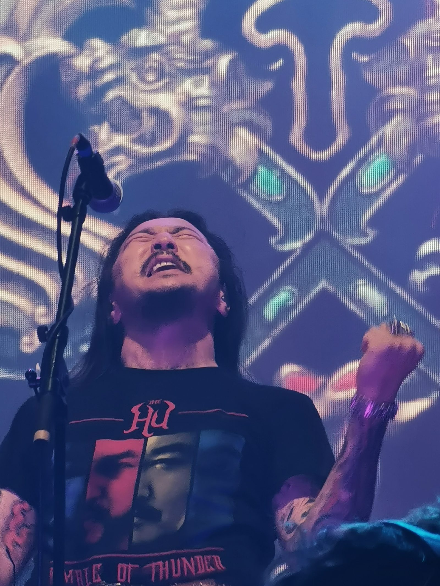
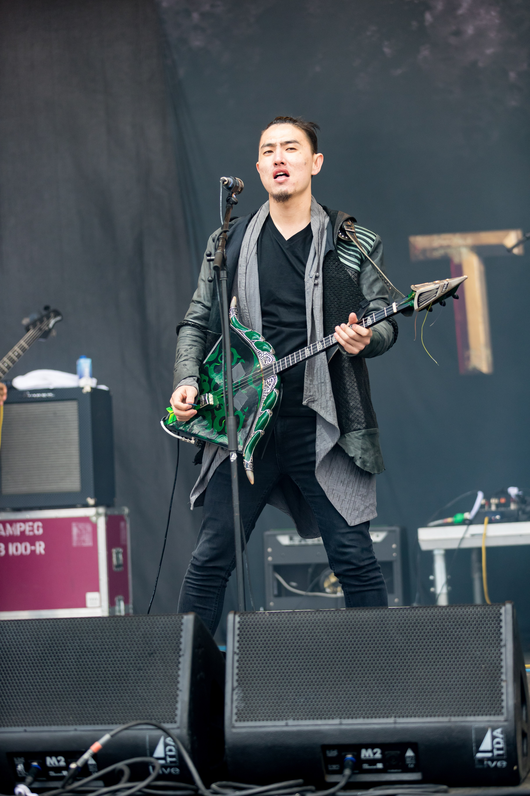
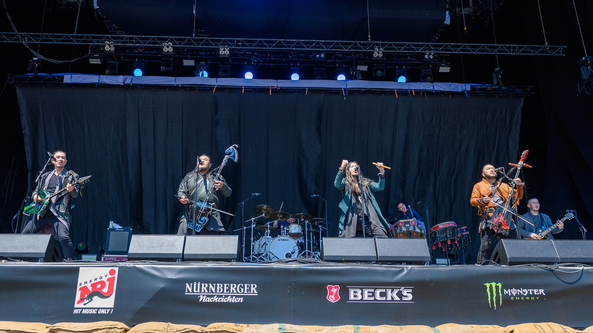
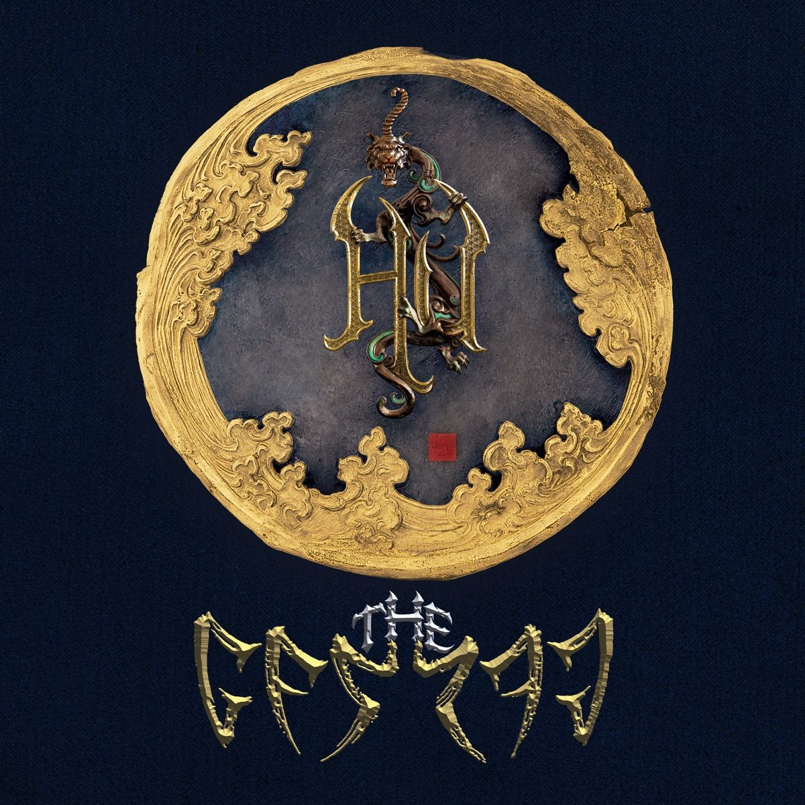
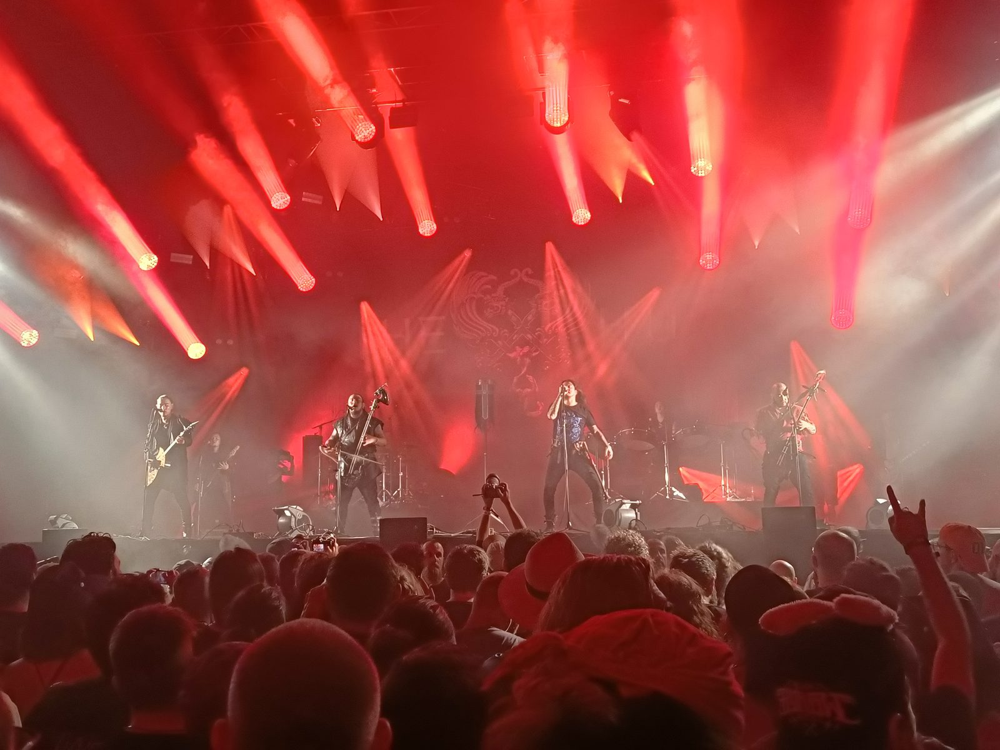
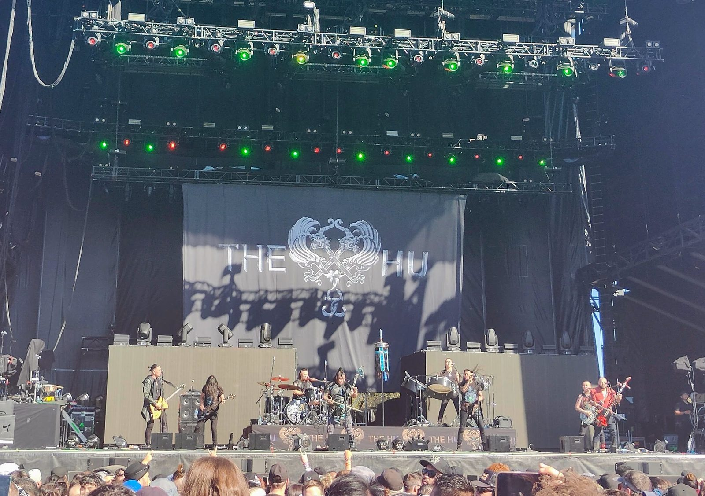
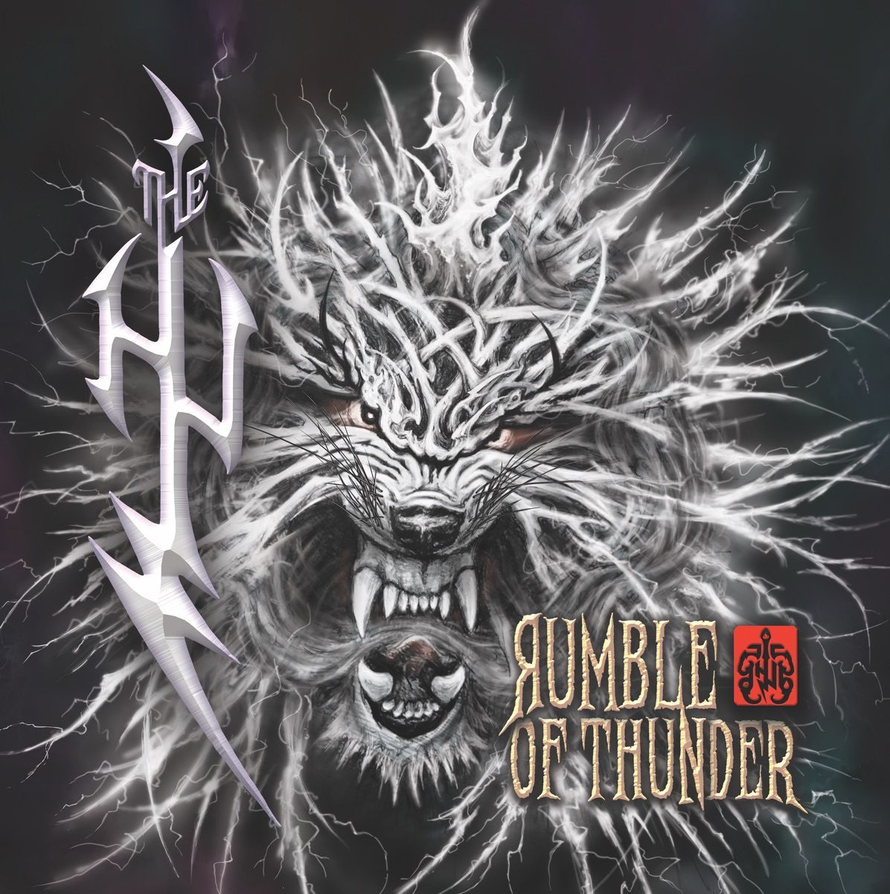
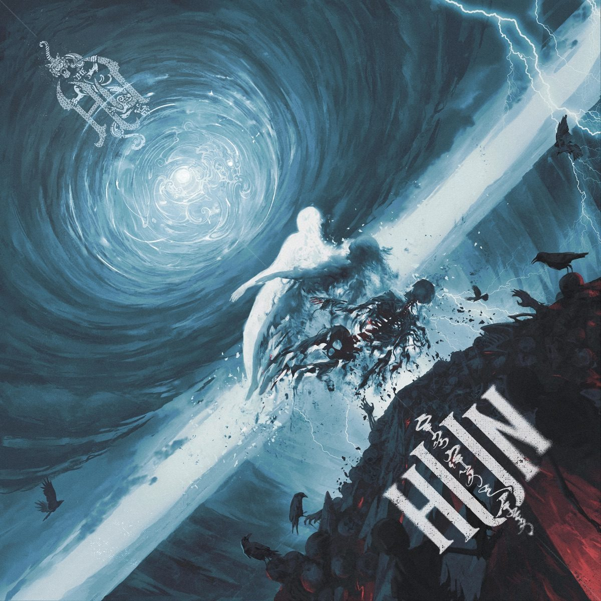

一位功勋歌手在音乐学院里挑了四个学生：两个拉马头琴、一个弹托布秀尔、一个吹绰尔。2018 年秋末，他们把两支 MV 挂上 YouTube，没有任何宣传——几个月里几千万播放。2019 年 4 月，一首唱狼的歌把这支乐队送上 Billboard 榜首，成为第一个做到这件事的蒙古音乐团体；同年 11 月，蒙古国把最高国家勋章第一次颁给了一支乐队。[1][5][7][18]

四个核心成员都是学院派出身，分工按传统乐器划线：两把马头琴互为对话，托布秀尔负责像节奏吉他一样碾出riff，口弦琴与绰尔补中景纹理，呼麦则是全队共享的人声技能。[1][2][12]
| 成员 | 分工 | 在队时间 |
|---|---|---|
| 嘎拉巴德拉赫 Galbadrakh "Gala" Tsendbaatar，艺名 Gala | 「闪电」马头琴（ayanga morin khuur）· 主呼麦[2][22] | 2016–今（创团成员） |
| 恩赫赛汗 Enkhsaikhan "Enkush" Batjargal，艺名 Enkush | 「火」马头琴（gal morin khuur）· 呼麦[2][22] | 2016–今（创团成员） |
| 尼亚姆詹茨 Nyamjantsan "Jaya" Galsanjamts，艺名 Jaya | 口弦琴（tumur khuur）· 绰尔（tsuur）· 呼麦；2008–2018 年间同时在学院任教[1][12] | 2016–今（创团成员） |
| 特穆伦 Temuulen "Temka" Naranbaatar，艺名 Temka | 「自然」托布秀尔（baigali tovshuur）· 和声、编程与混音[2][22] | 2016–今（创团成员） |
| Б·达西冬德格 B. Dashdondog，艺名 Dashka | 制作人 · 词曲 · 编程（乐队创始人与精神核心，不随队上台）[1][12] | 2016–今 |
| 巡演阵容 Unumunkh "Ono" Maralkhuu / Jambaldorj "Jamba" Ayush / Odbayar "Odko" Gantumur / Nyamdavaa "Davaa" Byambaa | 蒙古手鼓 hengereg 与口弦琴 / 吉他 / 爵士鼓 / 贝斯[1][12] | 2019/2020–今 |




收录于《The Gereg》第 2 轨 · 时长 5:38 · MV 于 2018 年秋末随乐队首批作品上线 · 制作：The Hu / B. Dashdondog[2][15][13]
把蒙古语西里尔原文逐行对读（据 Genius 收录的歌词），〈Wolf Totem〉的写法一目了然：它不是叙事，是一份蒙古史诗式的对仗猛兽表——狮子、虎、象、豹按位置逐一登场，句式成对出现，最后落到「人」：「人为与豹搏斗而拼尽全力」。中段以「Ху，ху」的齐声战吼作副歌，收尾一段把速度与图腾一层层叠上去：「以隼的速度加速突进／以狼的勇气如火焰燃烧／以战马的蹄声作响／以成吉思汗的印记压阵」。[13][14]
英文维基在介绍乐队时专门提过这一点：他们的歌词里包含古蒙古战吼与诗歌[1][17]。这首歌最像这类体裁的当代复活——吟唱的对象不是具体的某个人，是「每个人身体里的那个战士」。乐队自己对这首歌的解释是：「我们相信每个人体内都有一个战士。透过〈Wolf Totem〉，我们想唤醒它，让你能面对恐惧、跨过去。这首歌唱的是直面并接受对手，然后成为赢家。」——乐队自述，《Metal Hammer》2019 年逐轨导览[4]
听感上，这首歌成立的支点有三层，都建立在真实来源可查的事实上。
第一层：金属乐的「重」，不是电吉他给的。《The Gereg》的署名里，两把马头琴分别叫「闪电」（ayanga）与「火」（gal），托布秀尔叫「自然」（baigali）——三件弹拨与弓弦乐器经过拾音与失真处理，承担了传统金属里节奏吉他的全部职能[2][22]。卫报的乐评人对这种声音的描述是：节拍不像西方金属那样「捶打」，而是「疾驰」——那是游牧先人对马的联想[3]。口弦琴手兼管乐手贾亚的说法更直接：「传统蒙古音乐本来就是金属的，无论从乐器发出的声音还是史诗般的题材。它很容易就转化成现代金属。」[12]
第二层：呼麦与吼音的语法相通。呼麦让一个人同时唱出两到三个声部，低频铺底、泛音成线；对习惯金属吼腔的西方听众，它天然「像」嘶吼，却远比嘶吼精密。卫报记录了贾亚的解释：呼麦模仿的是水声与风声，「自然就在我们的嗓音里」[3]。放在〈Wolf Totem〉里，它把副歌那句「Ху」的战吼从口号变成了音墙。
第三层：timing。2018 年的 YouTube 正需要一支无法被归类的乐队——Eleven Seven 唱片的运营主管 Steve Kline 对卫报说：「吸引我们的不是播放量，而是他们的声音完全独一无二。我们甚至没法给他们贴标签……我们只会说：我们不太确定这是什么，但它真的很好。」[3]另一边，这支乐队在本土叙事里站得住：他们用蒙古语唱，MV 把传统骑手与骑哈雷的皮衣客放进同一画面——一种东方视角的《逍遥骑士》[3]。一首既有部落史诗骨架、又有金属律动的歌，恰好同时满足了两种想象。
说明：本页未逐项核实录音细节（调性、BPM、和声进行、录音室配置等暂无可靠来源），以上赏析建立在歌词文本、可查的乐器署名与乐评报道之上，未作声音层面的技术断言。
破局双曲的另一半——歌名直译「为什么？为什么？为什么？」，卫报转译为「How Strange, How Strange」。内容是对长辈的敬重与对自然的守护；MV 为拍西蒙古的实景，乐队 14 天跑了五千多公里的无铺装路，在高山和戈壁之间冻着拍完。它是乐队在公告牌主流摇滚榜上位置最高的一首（第 4）。[3][4][1]
《The Gereg》里最「文物」的一首：歌词出自 1624 年刻在岩石上的 Tsogt Taij（绰克图台吉）诗篇——蒙古文学史上有名的「绰克图台吉岩刻」。把一首近四百年前的岩石铭文写进金属乐编曲，乐队对「祖先」这件事最直白的一次表态。[4]
本期资料短片与〈Wolf Totem〉全曲等长（5:38 / 338.0 秒，以 Apple Music 与 MusicBrainz 一致标注的时长为准[15][2]），画面用乐队真实史料——2023 布达佩斯与 Hellfest / Aftershock 现场照、三位核心成员肖像、2019 德国音乐节现场、三张专辑封面——并在四处插入官方 MV 片段（〈Wolf Totem〉官方 MV 三段、〈This Is Mongol〉官方 MV 一段，均由 The HU 官方 YouTube 频道发布，片段出处已在对应画面标注）。解说稿已定稿，配音版正片（5:38，含解说与 BGM 闪避混音）已完成；本页内嵌的是其无声版，请同步播放原曲。





以下事实在不同来源间存在出入，本页如实记录、不强行取舍：
| 事项 | 分歧 |
|---|---|
| 成军年份 | 英文维基、卫报、UNESCO 表述、吉尼斯均记 2016 年 [1][3][6][10]；首发中文报道（搜狐 2018）称「成立于 2017 年 10 月」[22]。本页取 2016（多源一致且含官方表述）。 |
| 两支 MV 上线时间 | 英文维基记「2018 年末」[1]；Genius 给〈Wolf Totem〉标注 2018-11-16 [13]；蒙通社回顾称「2018 年秋季」[18]；搜狗百科记「2018 年 12 月」[20]。并存，本页表述为「2018 年秋末」。 |
| Billboard 登顶日期 | 英文维基（引 Billboard）记〈Wolf Totem〉2019 年 4 月 11 日登顶硬摇滚数字销量榜 [1]；吉尼斯记榜期 2019 年 4 月 20 日「首次登顶」[6]。应为「夺冠日」与「榜期日」之差，本页只写「2019 年 4 月」。 |
| 播放量口径 | 蒙通社：发布后一个月约 2500 万 [18]；卫报（2019 年 10 月）：两支 MV 一年内合计逾 4500 万 [3]；网易（2021 年 12 月）：两首分别 4100 万与 2800 万 [22]。口径与时间点不同，本页只引 2019 年口径并标注时间。 |
| 「hunnu」释义 | 英文维基：风格名取自匈奴（Хүннү），而「Hu」才是「人」[1]；《Metal Hammer》导览则把「hunnu」直接注为「人」[4]。本页取维基说，前者并存。 |
| 文化使者证书年份 | 蒙通社报道（8 月 10 日颁证）[9] 与吉尼斯（记 2019 年）[6] 一致为 2019；搜狗百科记 2020 年 4 月 [20]。本页取 2019。 |
| 「金属乐被禁」表述 | 卫报写「西方音乐在共产主义时期被禁，该时代 1992 年结束」[3]；英文维基表述为「此前被禁的重金属」[1]。本页采卫报表述并标注时间范围，不作更宽泛的引申。 |
| 获勋人数 | 蒙通社头条（引 GoGo 网）记成吉思汗勋章授予乐队共 11 人（4 名主唱、创始人、两位经纪人、鼓、吉他、贝斯等）[21]；总统府公文页只写「授予 The Hu 乐队」[7]。本页写「首次颁给团体」，人数取 11 并注明来源。 |
| 成吉思汗勋章年份 | 蒙通社 [25]、新华社（2019-11-18 宣布决定）、总统府公文 [7] 均为 2019 年 11 月 27 日；UNESCO 新闻稿与法新社系列报道（The National、The Standard 等转载）则记作「2020 年」[6][10][11]。本页取 2019（官方一手来源、多源一致）。 |
| 2022 年巡演名与范围 | 多家媒体（Mad About Rock、Click Magazine 等）把 The Hu 2022 年的世界巡演称为「Black Thunder」巡演，并把上半年的北美、日本、澳新段与下半年的欧洲英国段一并归入该名 [28]；Louder 的完整场次表则只对北美段标注与 Megadeth、Five Finger Death Punch、Fire From The Gods 同台，欧洲段无同台标记 [27]。本页正文把「Black Thunder」作为这一轮巡演的媒体称呼使用，并把「32 场 / 32 城 / 16 国」的计数严格限定在欧洲英国段。 |
| 绰尔（tsuur）的名录归属 | UNESCO 官方新闻稿把呼麦、绰尔、马头琴并称为「已列入人类非物质文化遗产名录」[10]；严格按 ICH 官网，马头琴 2008 年、呼麦 2010 年列入代表作名录，绰尔 2009 年列入的是「急需保护的非物质文化遗产名录」[26]。本页正文按官方口径并称，此处补记精确归属。 |
图片来源
[图1] Wikimedia Commons〈The Hu.jpg〉，摄者 Elekes Andor，CC BY-SA 4.0（2023-07-17，布达佩斯 Park）：commons.wikimedia.org/wiki/File:The_Hu.jpg
[图2] Wikimedia Commons〈2019 RiP The Hu - by 2eight - ZSC2060.jpg〉，摄者 Stefan Brending (2eight)，CC BY-SA 4.0（2019-06-07，Rock im Park）：commons.wikimedia.org/wiki/File:2019_RiP_The_Hu…
[图3] Wikimedia Commons〈The Hu - 2019159133408 2019-06-08 Rock am Ring - 0158 - B70I9288.jpg〉，摄者 Sven Mandel，CC BY-SA 4.0：commons.wikimedia.org/wiki/File:The_Hu_…_Rock_am_Ring…
[图4] Wikimedia Commons〈The Hu Hellfest 2023.jpg〉，摄者 Hoolen，CC BY-SA 4.0（2023-06-18）：commons.wikimedia.org/wiki/File:The_Hu_Hellfest_2023.jpg
[图5] Wikimedia Commons〈20231006 the hu.jpg〉，摄者 Wünderbrot，CC BY-SA 4.0（2023-10-06，Aftershock）：commons.wikimedia.org/wiki/File:20231006_the_hu.jpg
[图6] Wikimedia Commons〈Gala -.jpg〉，摄者 Elekes Andor，CC BY-SA 4.0（2023-07-17）：commons.wikimedia.org/wiki/File:Gala_-.jpg
[图7] Wikimedia Commons〈Jaya (2).jpg〉，摄者 Elekes Andor，CC BY-SA 4.0（2023-07-17）：commons.wikimedia.org/wiki/File:Jaya_(2).jpg
[图8] Wikimedia Commons〈Enkush (2).jpg〉，摄者 Elekes Andor，CC BY-SA 4.0（2023-07-17）：commons.wikimedia.org/wiki/File:Enkush_(2).jpg
[图9] 《The Gereg》专辑封面，取自 Apple Music / iTunes 商店专辑页（Better Noise Music 供图）：music.apple.com/us/album/the-gereg-deluxe-edition
[图10] 《Rumble of Thunder》专辑封面，取自 Apple Music / iTunes 商店专辑页（Better Noise Music 供图）：music.apple.com/us/album/rumble-of-thunder
[图11] 《Hun》专辑封面，取自 Apple Music / iTunes 商店专辑页（Better Noise Music 供图）：music.apple.com/us/album/hun
[图12] 以下为资料短片用图（图文页未直接展示）。Wikimedia Commons〈The Hu - 2019159133446 2019-06-08 Rock am Ring - 0001 - 5DSR0573.jpg〉，摄者 Sven Mandel，CC BY-SA 4.0（2019-06-08，Rock am Ring）：commons.wikimedia.org/wiki/File:The_Hu_…_5DSR0573.jpg
[图13] Wikimedia Commons〈The Hu - 2019159133510 2019-06-08 Rock am Ring - 0009 - 5DSR0581.jpg〉，摄者 Sven Mandel，CC BY-SA 4.0（2019-06-08，Rock am Ring）：commons.wikimedia.org/wiki/File:The_Hu_…_5DSR0581.jpg
[图14] Wikimedia Commons〈The Hu - 2019159133217 2019-06-08 Rock am Ring - 0040 - B70I9170.jpg〉，摄者 Sven Mandel，CC BY-SA 4.0（2019-06-08，Rock am Ring）：commons.wikimedia.org/wiki/File:The_Hu_…_B70I9170.jpg
[图15] Wikimedia Commons〈The Hu - 2019159133153 2019-06-08 Rock am Ring - 0037 - B70I9167.jpg〉，摄者 Sven Mandel，CC BY-SA 4.0（2019-06-08，Rock am Ring）：commons.wikimedia.org/wiki/File:The_Hu_…_B70I9167.jpg
[图16] Wikimedia Commons〈The Hu - 2019159133335 2019-06-08 Rock am Ring - 0119 - B70I9249.jpg〉，摄者 Sven Mandel，CC BY-SA 4.0（2019-06-08，Rock am Ring）：commons.wikimedia.org/wiki/File:The_Hu_…_B70I9249.jpg
[图17] Wikimedia Commons〈The Hu - 2025159 192910 2025-06-08 Zeltfestival Rhein-Neckar - Sven - 1D X MK II - 0229 - B70I2302.jpg〉，摄者 Sven Mandel，CC BY-SA 4.0（2025-06-08，Zeltfestival Rhein-Neckar）：commons.wikimedia.org/wiki/File:The_Hu_…_B70I2302.jpg
[图18] Wikimedia Commons〈The Hu - 2025159 200052 2025-06-08 Zeltfestival Rhein-Neckar - Sven - 1D X MK II - 0398 - B70I2471.jpg〉，摄者 Sven Mandel，CC BY-SA 4.0（2025-06-08，Zeltfestival Rhein-Neckar）：commons.wikimedia.org/wiki/File:The_Hu_…_B70I2471.jpg
[图19] Wikimedia Commons〈The-hu-samar'ock.jpg〉，摄者 Valere jelic，CC BY-SA 4.0（2019-12-14，Samar'ock Festival）：commons.wikimedia.org/wiki/File:The-hu-samar'ock.jpg
[图20] Wikimedia Commons〈The-hu.jpg〉，摄者 Valere jelic，CC BY-SA 4.0（2019-12-14，Samar'ock Festival）：commons.wikimedia.org/wiki/File:The-hu.jpg
[图21] 成员肖像（图文页展示）。Wikimedia Commons〈The Hu - 2019159133009 2019-06-08 Rock am Ring - 0009 - AK8I7908.jpg〉，摄者 Sven Mandel，CC BY-SA 4.0（2019-06-08，Rock am Ring）：commons.wikimedia.org/wiki/File:The_Hu…_AK8I7908.jpg


.jpg){kind=link}
.jpg){kind=link}